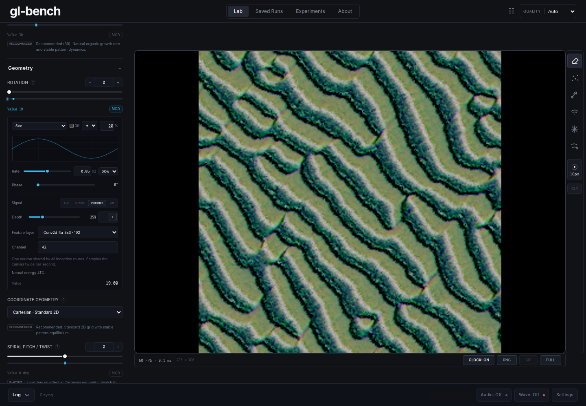

ANGLE (AMD, AMD Radeon RX 6700 XT (radeonsi navi22 ACO), OpenGL ES 3.2) · membrane-field · 256×256 cells · production canvas 768×768
| Condition | FPS | NCA updates/sec | p95 / p99 frame ms | Max frame ms | Median inference ms | p95 snapshot ms | Main-thread long tasks |
|---|---|---|---|---|---|---|---|
| No sensor | 60.1 | 30.0 | 16.9 / 19.4 | 21.0 | — | — | 0 |
| Sensor loading and first samples | 60.2 | 30.2 | 17.0 / 19.3 | 21.1 | 6.6 | 0.4 | 0 |
| Conv2d_4a_3x3:42 | 60.0 | 30.0 | 16.9 / 21.5 | 23.2 | 5.9 | 0.4 | 0 |
| mixed_5b:120 | 60.1 | 30.1 | 16.9 / 21.8 | 23.2 | 10.1 | 0.4 | 0 |
One scalar downloaded per sample; no retained tensors or WebGL errors. Samples start no faster than every 500 ms.
Full timing and signal measurements
